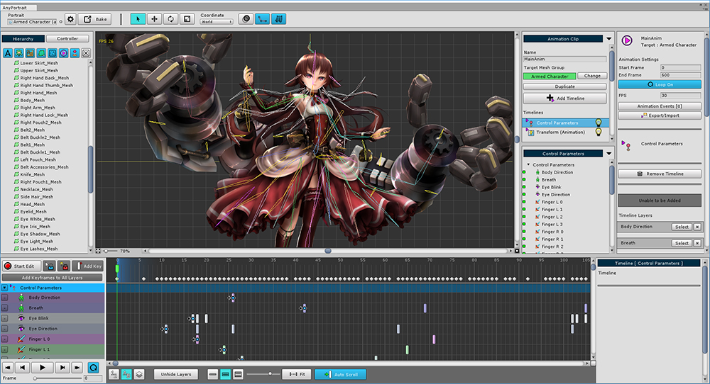
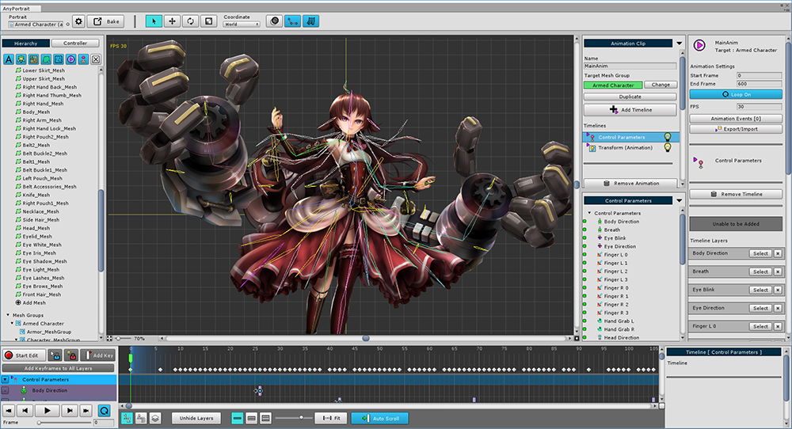
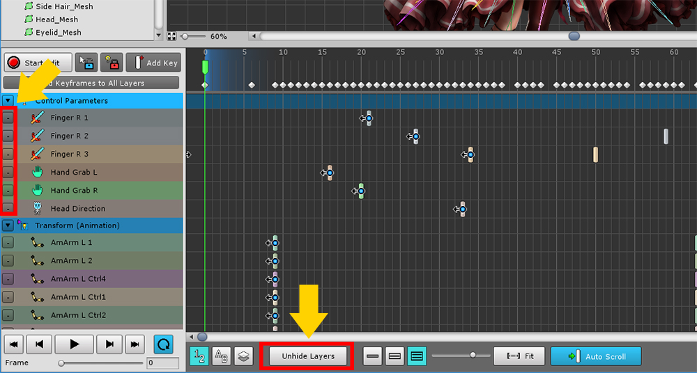
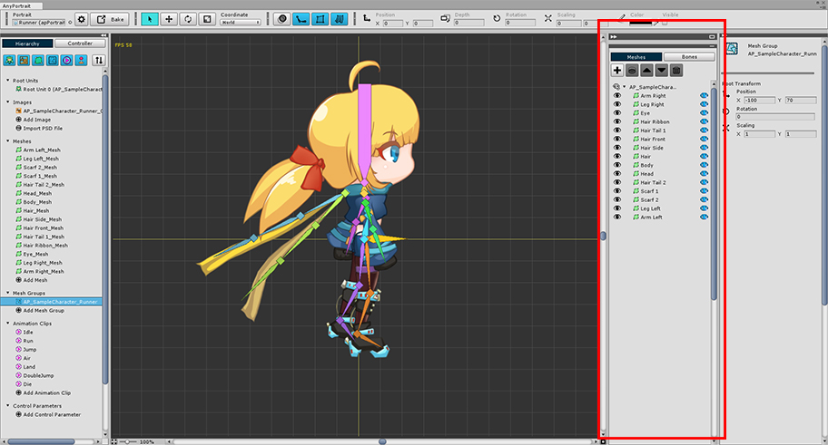
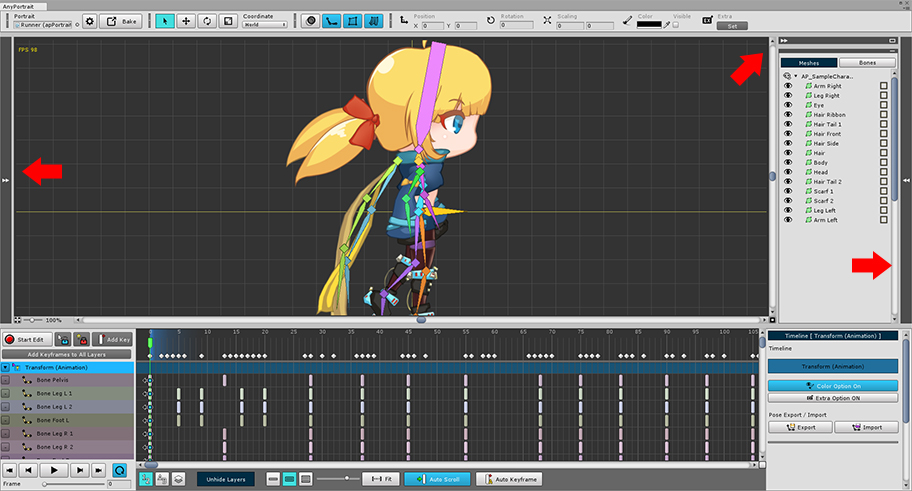
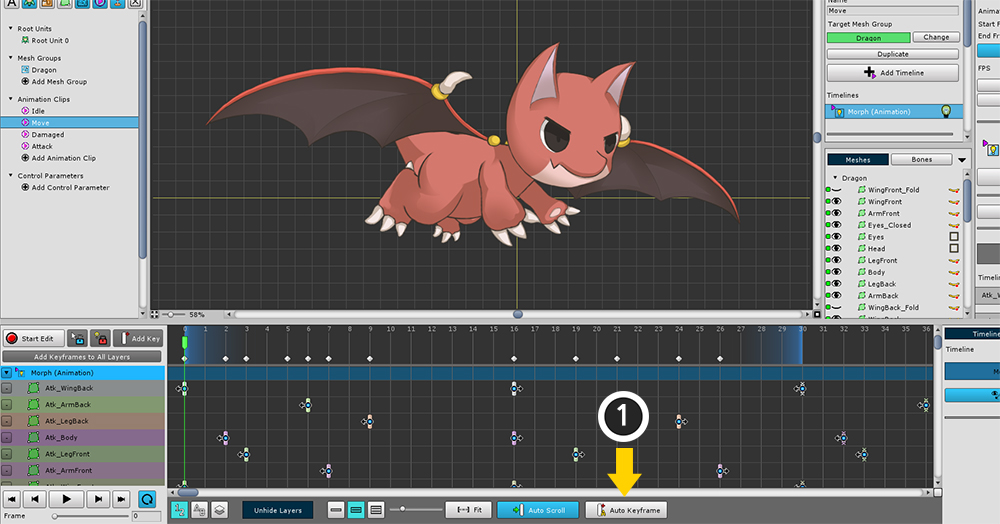

AnyPortrait > Manual > Workspace, Animation UI
Workspace, Animation UI
1.2.2

This page explains how to control your workspace or other UI with ease of use.
By hiding unnecessary information, you can increase the efficiency of your work.
Maximize workspace

You can hide the left and right UI by pressing the small button located at the bottom left of the workspace.
Due to the nature of the animation work, the timeline will not disappear.
It is available in all menus as well as animated screens.
(Shortcut: Alt + W )
Timeline UI size

The animation timeline UI size at the bottom of the screen can be adjusted in three steps.
Use the three buttons at the bottom of the screen to switch.


It may be convenient to make the timeline UI small when editing and selecting the object, and to enlarge the timeline UI when editing the key frame.
Hide Timeline layers

A lot of timeline layers make viewing uncomfortable.
You can hide it by clicking the small button to the left of the timeline layer.
Press the Unhide Layers button to re-display all hidden timeline layers.
Fold the UI on both sides

1.1.8
The UI on both sides of the workspace is often not needed during work.
Unlike the "maximizing the workspace" described above, users can selectively hide the UI on the left or right.
As of v1.1.8, the "◀◀" button and the gray bar have been added to the top of the left and right UI.

You can hide or show the UI by pressing the "◀◀" button.
The hidden UI reappears when you press the gray bar as well as the button.

When you select a Mesh Group or Animation Clip, "-" buttons are added on the right UI.

Pressing the "-" button collapses the UI and expands the area of the other UI at the top or bottom.
The shape of the hidden UI "-" button changes to "□" shape.
Press this button again to make the UI to the original size.

As shown in the image above, you can adjust the UI to suit you efficiently.
Top UI of screen

1. Settings and Bake : Change the settings of the editor or apPortrait.
2. Select / Transform tools : Tools that allow you to select, move, rotate, or resize objects. (Shortcut keys: Q, W, E, R )
3. Onion Skin : Turn on/off the Onion Skin and record the status. (Shortcut: O ) Pressing the Ctrl and clicking opens the detail settings.
4. Show / Hide Bone : Show or hide the Bone. There are three steps: "Hide, Show, Show Line". (Shortcut: B )
5. Show / Hide Mesh : Show or hide the mesh.
6. Turn Physical Effects On / Off : You can turn physical effects on or off.
7. Transformation Values : The position, rotation, size, and color of the object being edited are displayed. These are slightly different depending on the object.


You can hide each group of tools at the top of the screen UI.
When you click a delimiter in a tool group, the tools are hidden.
Click on the folded separator to see the tool group again.
Animated UI for added features

1. Auto Keyframe : If you modify the object while this function is on, keyframes are created automatically.

1.2.2
If you click an empty space at the top of the Timeline UI holding down the Ctrl ( Command in Mac OS) and the Shift , the time slider will jump to that location.